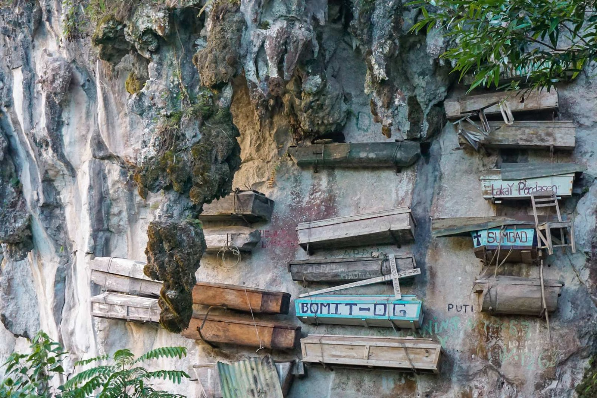

The Hanging Coffins of Sagada are ancient wooden coffins nailed to the cliffs of Echo Valley — a 2,000-year-old Igorot burial tradition where the dead are placed high on the mountainside to be closer to the spirit world and to watch over their descendants below.

The Hanging Coffins of Sagada are one of the most extraordinary cultural sites in the Philippines · ancient wooden coffins nailed to the limestone cliffs of Echo Valley in Sagada, Mountain Province. The practice of hanging coffins on cliff faces is a tradition of the Igorot people of Sagada, believed to date back at least 2,000 years.
According to Igorot belief, placing the dead high on the cliffs brings them closer to the spirit world and allows them to watch over their living descendants in the valley below. The coffins are carved from hollowed logs, and the deceased are placed inside in a fetal position — symbolizing the return to the womb and the cycle of life.
The hanging coffins are reached via a short trek through Echo Valley — a dramatic limestone gorge where the cliffs rise steeply on both sides. The valley is named for its remarkable acoustics — sounds echo dramatically off the limestone walls. The combination of the ancient coffins, the dramatic cliffs, and the mountain forest creates an atmosphere of profound solemnity and beauty.
The Hanging Coffins are in Sagada, Mountain Province — reached via Baguio City and a scenic mountain road through the Cordillera.
Take a bus from Manila to Baguio City (~5₱6 hours). Baguio is the main staging point for Sagada trips.
Bus: ~5₱6 hrs | ~₱400–₱600From Baguio City, take a bus or van to Sagada (~5₱6 hours). The road passes through Bontoc, the capital of Mountain Province. The scenery along the Halsema Highway is spectacular.
Bus/van: ~5₱6 hrs | ~₱200–₱350All visitors to Sagada must register at the Sagada Tourism Office and pay the environmental fee. A licensed local guide is mandatory for visiting the Hanging Coffins and Sumaguing Cave.
Environmental fee: ~₱50–₱100 | Guide: mandatoryFrom the Sagada town center, a 30-minute trek leads through pine forest to Echo Valley and the Hanging Coffins viewpoint. The trail is well-marked and the guide will explain the cultural significance of the burial tradition.
Trek: ~30 min | Guide fee: ~₱300–₱500Click any pin to explore the Hanging Coffins, Sumaguing Cave, and the key sites of Sagada.
Combine the Hanging Coffins with Sumaguing Cave and Bomod-ok Falls for the complete Sagada experience.
Arrive in Sagada and register at the tourism office. Have breakfast at a local cafe — try the Sagada Arabica coffee and local Igorot dishes.
Trek to Echo Valley with your guide. Stand before the ancient hanging coffins on the limestone cliffs and listen to your guide explain the 2,000-year-old burial tradition of the Igorot people.
Spend the afternoon exploring Sumaguing Cave — the most spectacular cave in Sagada, with massive chambers, dramatic limestone formations, and an underground river.
Wake before dawn for the Sagada sunrise from the viewpoint above town. The mountains and valleys below turn gold as the sun rises over the Cordillera.
Trek to Bomod-ok Falls — a 2-hour walk through rice terraces and forest to a beautiful 200-foot waterfall. Swim in the natural pool at the base.
Take the afternoon bus back to Baguio City or continue to the next Cordillera destination. Buy Sagada coffee and local crafts as pasalubong.
"Standing in Echo Valley, looking up at the ancient coffins nailed to the limestone cliffs, I felt the full weight of 2,000 years of human history. Our guide explained the belief that the dead watch over the living from their high perches — and standing there in the silence of the valley, with the cliffs rising above me, I understood it completely. The Hanging Coffins are one of the most profound cultural experiences in the Philippines."
"Sagada is one of those places that stays with you long after you leave. The Hanging Coffins, the cave, the falls, the coffee, the cool mountain air — it's a complete experience. The Igorot culture is fascinating and the local guides are wonderful storytellers. I've been to Sagada three times and I discover something new every visit."